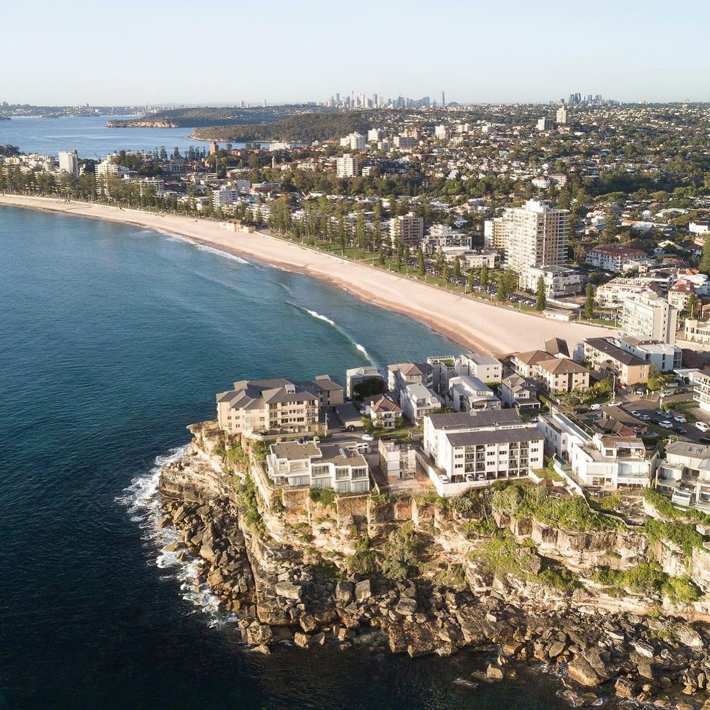

Playa de Manly
(Manly Beach)
Manly Beach es un hito Australiano de fama mundial. Es una de las playas más reconocidas para la práctica del Surf. Aqui es donde se llevó a cabo el primer concurso de Surf del mundo en 1964.
Suban a bordo del Manly Ferry, una de las experiencias más icónicas de Sydney. Manly tiene impresionantes playas, cafés al aire libre, bares y restaurantes geniales, tiendas de surf y artículos de playa, además de pintorescos paseos costeros.
Con salidas regulares desde Circular Quay, el ferry pasa por el puente del puerto de Sydney, la Ópera de Sydney y por Kirribilli House (residencia oficial del Primer Ministro) antes de llegar al muelle de Manly.
El viaje desde el centro de Sydney a Manly sólo toma 20 minutos.
No recomiendo llevar papitas fritas a la playa. Ya que en Manly, como en cualquier otra playa, las gaviotas no te van a dejar tranquila.
Llueva, truene o salga el sol, el beber cerveza en Australia es un Deporte Nacional.
Tuve que hacer un esfuerzo supremo para adoptar este extraño hábito!!!
Durante muchos años, fue Alemania la que encabezó la lista. Pero en 1973, Australia alcanzó el número 1: bebía 9,59 litros per cápita.
El Corso (avenida) sigue siendo el punto focal de Manly como un centro comercial parcialmente peatonal lleno de populares tiendas de surf, pubs, cafés, galerías y entretenimiento callejero.
Al atardecer volvemos en ferry al centro de Sydney y podemos observar la ciudad iluminada desde lo lejos.